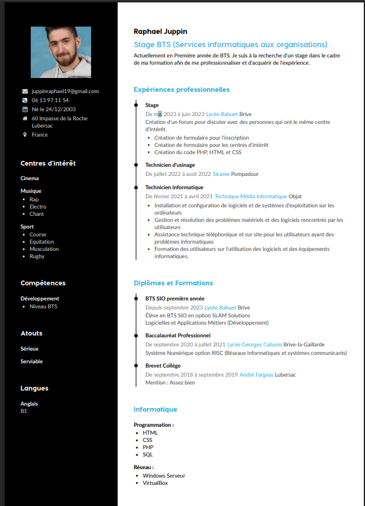

À propos de moi
Je m'appelle Raphaël Juppin, étudiant en BTS SIO (Services Informatiques aux Organisations), option SLAM (Solutions Logicielles et Applications Métiers). Passionné par le développement et les technologies numériques, j'ai auparavant obtenu un BAC PRO SN (Systèmes Numériques), qui m'a permis d'acquérir de solides bases techniques.
Mon CV

Contact
N'hésitez pas à me contacter pour toute collaboration ou question.
Email : juppinraphael19@gmail.com